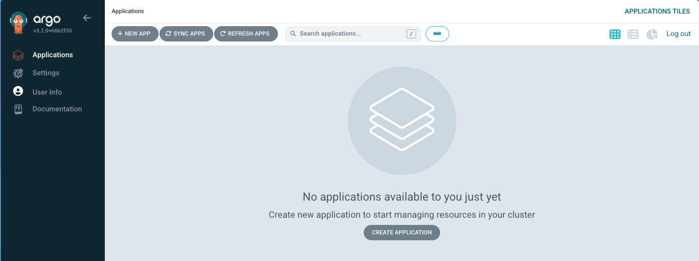
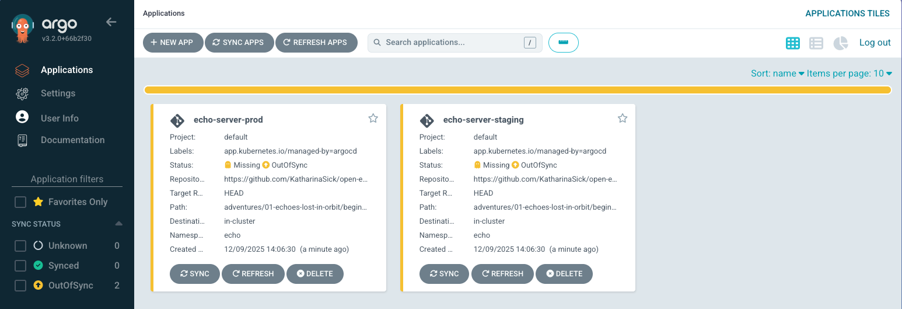
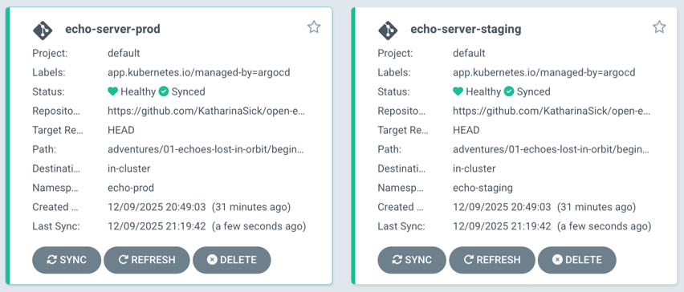

🟢 Beginner Solution: Broken Echoes#
Congratulations on taking on the first Open Ecosystem Challenge! In this walkthrough, we'll approach the challenge exactly as you would: start with the objectives, break them down one by one, and systematically fix what's broken. 🚀
⚠️ Spoiler Alert: This walkthrough contains the full solution to the challenge. We encourage you to try solving it on your own first. Consider coming back here only if you get stuck or want to check your approach.
📋 Step 1: Review the Challenge Objectives#
Let's start by reading what we need to achieve. The challenge states:
By the end of this level, you should:
- See two distinct Applications in the Argo CD dashboard (one per environment)
- Ensure each Application deploys to its own isolated namespace
- Make the system resilient so Argo CD automatically reverts manual changes made to the cluster
- Confirm that updates happen automatically without leaving stale resources behind
Perfect! Now we have four clear objectives to work toward. Let's tackle them one by one.
🔍 Step 2: Understand the Setup#
Before we start fixing things, let's understand what we're working with. The challenge uses:
- Argo CD ApplicationSet: Automatically generates Applications for multiple environments
- Git directory generator: Scans for directories in the
overlays/folder (findsstagingandprod) - Kustomize: Manages environment-specific configurations
- Base: Common configuration (deployment, service)
- Overlays: Environment-specific customizations (staging and prod)
The file we need to fix is:
adventures/01-echoes-lost-in-orbit/beginner/manifests/appset.yaml
Let's open it:
apiVersion: argoproj.io/v1alpha1
kind: ApplicationSet
metadata:
name: echo-server
namespace: argocd
spec:
generators:
- git:
repoURL: __REPO_URL__
revision: HEAD
directories:
- path: adventures/01-echoes-lost-in-orbit/beginner/manifests/overlays/*
template:
metadata:
name: echo-server
labels:
app.kubernetes.io/managed-by: argocd
spec:
project: default
source:
repoURL: __REPO_URL__
targetRevision: HEAD
path: adventures/01-echoes-lost-in-orbit/beginner/manifests/overlays/{{path.basename}}
destination:
server: https://kubernetes.default.svc
namespace: echo
syncPolicy:
syncOptions:
- CreateNamespace=true
Now let's work through each objective.
🎯 Step 3: Clear Objectives#
Objective 1: See Two Distinct Applications in the Argo CD Dashboard#
When opening the Argo CD dashboard (port 30100), we won’t see any applications.

Let's check if the ApplicationSet is present:
kubectl get applicationset -n argocd
You should see echo-server listed. That means Argo CD is at least aware of our ApplicationSet.
Let's dig deeper and check the status of the ApplicationSet:
kubectl get applicationset echo-server -n argocd -o yaml
Scroll down to the status.conditions section. You should see an error like:
- message: 'ApplicationSet echo-server contains applications with duplicate name: echo-server'
reason: ErrorOccurred
status: "False"
This error means there are duplicate application names. Let's look at how the name is set in the template.
The manifest shows:
metadata:
name: echo-server
namespace: argocd
For each environment (staging and prod), Argo CD tries to create an application called echo-server. This fails because Kubernetes resources must have unique names in a namespace, but the ApplicationSet template uses a static name for every generated Application. The Git directory generator creates one Application per overlay directory, so you need a unique name for each.
How to fix?#
Let's update the name field to use a template variable:
name: echo-server-{{path.basename}}
This way, Argo CD will generate echo-server-staging and echo-server-prod. One for each environment. The {{path.basename}} variable is replaced with the directory name (e.g., staging or prod) for each overlay, ensuring uniqueness.
Now, let's apply the fix:
kubectl apply -n argocd -f adventures/01-echoes-lost-in-orbit/beginner/manifests/appset.yaml
Go back to the dashboard. You should now see two progressing applications.

Key Takeaways#
- ApplicationSets use templates to generate multiple Applications, and names must be unique per environment.
- The Git directory generator creates one Application per overlay directory, so template variables like
{{path.basename}}are essential for dynamic naming. - The ApplicationSet and Application status are helpful for troubleshooting errors.
Further Reading#
Objective 2: Ensure each Application deploys to its own isolated namespace#
We now have two applications showing up in Argo CD. But they are both deploying to the same namespace: echo.
Each environment should at least have its own namespace for isolation and to avoid resource conflicts. This can be achieved by using a template variable in the namespace field, just like with the application name.
How to fix?#
Update the namespace field in the ApplicationSet manifest to include the {{path.basename}} variable:
spec.template.spec.destination.namespace: echo-{{path.basename}}
Now, let's apply the fix:
kubectl apply -n argocd -f adventures/01-echoes-lost-in-orbit/beginner/manifests/appset.yaml
This will set the destination namespace to echo-staging and echo-prod for the respective environments.
Key Takeaways#
- How to use template variables for namespace isolation in multi-environment setups.
Further Reading#
Objective 3: Make the system resilient so Argo CD automatically reverts manual changes made to the cluster#
Our Applications are now deploying to separate namespaces, but they are not syncing yet and users can still make manual changes to the cluster. Let's split this objective into two clear steps:
Fix 1: Enable auto sync#
By default, Argo CD does not automatically sync Applications. This means changes in Git are not applied to the cluster unless you manually trigger a sync (which is disabled for this challenge). To fix this, let's enable auto sync in the ApplicationSet manifest:
syncPolicy:
automated:
enabled: true
syncOptions:
- CreateNamespace=true
Apply the change:
kubectl apply -n argocd -f adventures/01-echoes-lost-in-orbit/beginner/manifests/appset.yaml
Now, Argo CD will automatically sync the Applications whenever there are changes in Git.

💡 By default, this takes up to 3 minutes to detect changes. can speed this up by configuring a webhook to ArgoCD but for this challenge manually refreshing is just fine.
Fix 2: Enable self-healing (automatic reverts)#
Auto sync alone will not revert manual changes made directly in the cluster. To make Argo CD truly resilient, let's enable self-healing. This will ensure that any drift from the desired state in Git is automatically corrected.
Update the ApplicationSet manifest to add selfHeal: true:
syncPolicy:
automated:
enabled: true
selfHeal: true
syncOptions:
- CreateNamespace=true
Apply the change:
kubectl apply -n argocd -f adventures/01-echoes-lost-in-orbit/beginner/manifests/appset.yaml
Let's test self-healing by making a manual change:
kubectl scale deployment echo-server-staging -n echo-staging --replicas=3
kubectl get pods -n echo-staging -w
Within seconds, Argo CD will detect the drift and scale it back down to 1 replica (as defined in Git).
Key Takeaways#
- Auto sync ensures that changes in Git are automatically applied to the cluster.
- Self-healing ensures the cluster matches the desired state in Git, even after manual changes.
- Auto sync and self-heal together enforce GitOps and keep your cluster consistent.
Further Reading#
Objective 4: Confirm that updates happen automatically without leaving stale resources behind#
Now that our applications can sync automatically and self-heal, let's make sure that deleting resources from Git also removes them from the cluster. Otherwise, we risk leaving behind stale resources that are no longer needed.
By default, Argo CD does not remove resources from the cluster when they are deleted from Git. Pruning must be explicitly enabled to keep the cluster clean and in sync with Git.
How to fix?#
Let's enable pruning by adding prune: true to the automated sync policy in the ApplicationSet manifest:
syncPolicy:
automated:
enabled: true
selfHeal: true
prune: true
syncOptions:
- CreateNamespace=true
Apply the change:
kubectl apply -n argocd -f adventures/01-echoes-lost-in-orbit/beginner/manifests/appset.yaml
Now, Argo CD will automatically delete resources from the cluster when they're removed from Git.
Key Takeaways#
- Pruning (in combination with self-heal) ensures the cluster matches Git exactly.
- Automated sync policies with pruning keep environments clean and up to date.
Further Reading#
✅ Complete Solution#
Here's what your corrected ApplicationSet should look like with all fixes applied:
apiVersion: argoproj.io/v1alpha1
kind: ApplicationSet
metadata:
name: echo-server
namespace: argocd
spec:
generators:
- git:
repoURL: __REPO_URL__
revision: HEAD
directories:
- path: adventures/01-echoes-lost-in-orbit/beginner/manifests/overlays/*
template:
metadata:
name: echo-server-{{path.basename}} # ✅ Unique name per environment
labels:
app.kubernetes.io/managed-by: argocd
spec:
project: default
source:
repoURL: __REPO_URL__
targetRevision: HEAD
path: adventures/01-echoes-lost-in-orbit/beginner/manifests/overlays/{{path.basename}}
destination:
server: https://kubernetes.default.svc
namespace: echo-{{path.basename}} # ✅ Environment-specific namespace
syncPolicy:
automated:
enabled: true # ✅ Automatic sync enabled
selfHeal: true # ✅ Reverts manual changes
prune: true # ✅ Deletes removed resources
syncOptions:
- CreateNamespace=true
That's it! Your ApplicationSet is now ready for resilient, automated, and clean multi-environment deployments with Argo CD.
If you want to go further, use this setup to experiment with ArgoCD, or explore the intermediate challenge next.